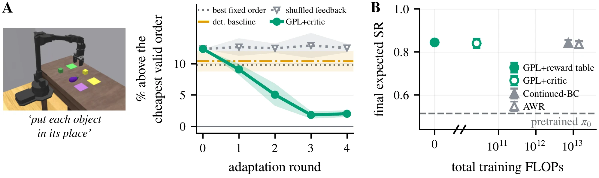
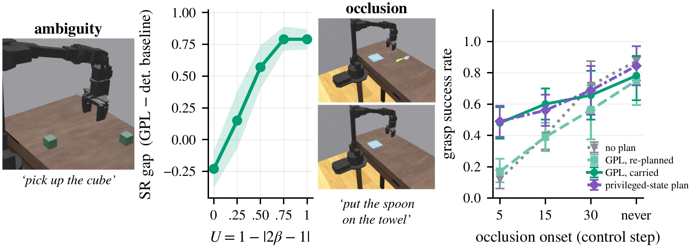
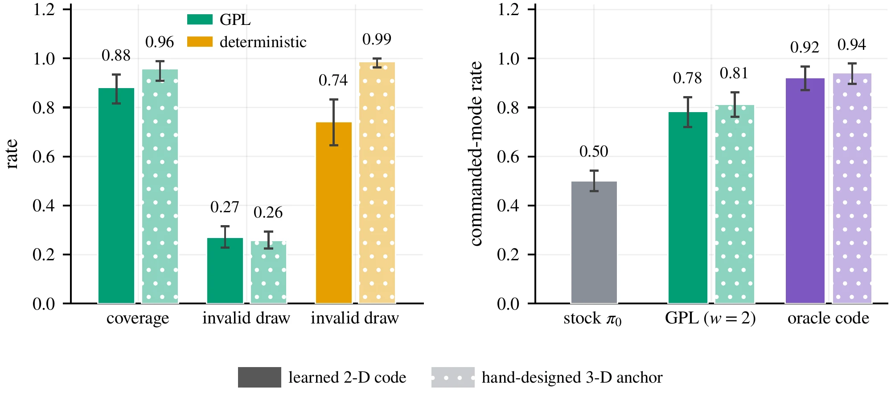
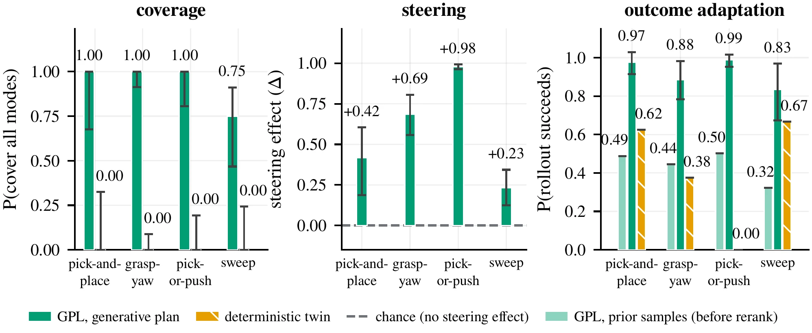
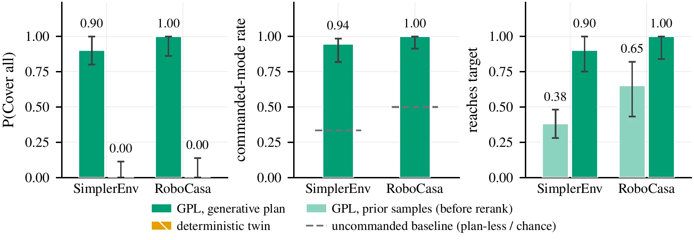
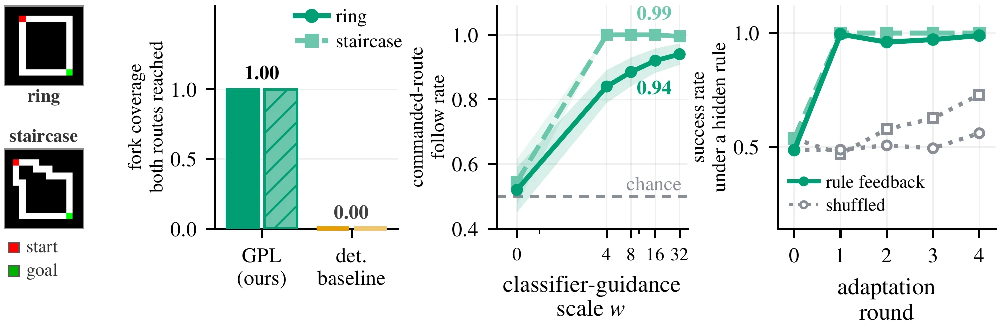

Reasoning VLAs compress the decision they make before acting into a single representation. When several plans are valid, that commitment hides the alternatives.
GPL keeps the decision as a distribution over plans, so at deployment it can be sampled, steered, and reweighted by outcomes, without retraining the VLA.
0.48 → 0.94
commanded-mode rate as plan guidance grows; the same guidance on π0's native action distribution shows no reliable gain
+0.54 vs +0.02
steer range of a plan command vs an ECoT-style language command, same downstream executor
≈388×
fewer training FLOPs for frozen-generator reranking to match generator retraining (Continued-BC, AWR) on the two-cube task; a reward table needs none
+0.19 → +0.65
LIBERO steer range when counterfactual demonstrations drive plan redundancy \(\widetilde R\) from 0.47 to 0.00
Abstract
Vision–Language–Action (VLA) policies increasingly reason before acting, but existing reasoning models compress this intermediate decision into a single representation. When several plans are valid, this commitment hides alternatives that could otherwise be selected or revised. We introduce the Generative Plan Latent (GPL), which represents the reasoning state as a low-dimensional conditional distribution over plans, such as which object, grasp, or route to use. This makes the reasoning state addressable: without retraining the VLA, plans can be sampled (coverage), selected on request (steering), and reweighted by deployment outcomes (outcome adaptation). We test all three on SimplerEnv manipulation with π0, and extend the analysis to RoboCasa, LIBERO, and a maze domain. Steering the plan raises the fraction of executions that follow the request from 0.48 to 0.94, while the same guidance on the native action distribution shows no reliable gain. Finally, we show that an explicit plan is most useful when it carries decision information not already determined by the observation.
01The idea
Keep the alternatives at the decision bottleneck
A robot faces two identical cubes, and the instruction names neither. Both cubes are valid targets. A reasoning state that must output one decision either averages them, which yields a plan between the cubes, or commits to one, which hides the other. GPL keeps the decision as a distribution \(p_\theta(z \mid c)\) over plans \(z\).
Regression readout
One plan: the mean of the valid ones, which lies between the cubes.
invalid
Winner-take-all
One valid plan, the same one every time. The other cube is gone.
valid · committed
GPL
A rectified flow maps noise to plans. Draws land on a cube, and both cubes stay reachable.
valid · addressable
Play with the plan distribution
Because the alternatives stay explicit, the same distribution can be steered toward a requested plan, or reweighted by what happened when plans were tried. Neither changes the generator's weights.
Request a cube
Pick a cube and raise the guidance dose \(w\). Guidance bends the flow, so more noise draws end on the requested cube. At \(w = 0\) the flow is the unchanged prior.
dose \(w\)0.0
draws on the requested cube–
Learn from outcomes
After a hidden change, the left cube fails 80% of the time and the right one 10%. Each deployment picks one of 16 frozen draws, observes success or failure, and updates a per-mode reward table. Draws are reweighted by \(\exp(\beta\,\hat s)\); dot size is the weight.
\(\beta\)8
left: successes / tries–
right: successes / tries–
expected success–
P(left) under the reweighted draws: –
A one-dimensional toy of the mechanism, not data from the paper: the paths are the exact rectified-flow ODE for a two-mode plan distribution, and guidance tilts that distribution toward the requested mode. The measured results are in the sections below.
02Method
A generative plan latent inside a pretrained VLA
GPL inserts a generative variable upstream of the action model, where the task-level decision is made. The frozen VLA backbone encodes the observation \(o\) and instruction \(l\) into \(c\). A small rectified-flow head samples a plan \(z \sim p_\theta(z \mid c)\), and a projector injects it as \(k = 8\) soft tokens into the executor's prefix. Sampling, guidance, and outcome reranking all act on this one plan distribution.
The plan is drawn every N steps; the action expert acts at every step, conditioned on the projected plan and fresh observations. Only the plan head, the projector, and a LoRA on the action expert are trained.
Which cubethe decision is in the position channel
Grasp anglethe decision is in the yaw channel
t = 0.00
One reasoner, 22 draws of the grasp keyframe on the scene image, integrated from noise (t = 0) to committed (t = 1). Drag t. With two cubes the draws split between the cubes; with one cube they split between two grasp angles 90° apart. Draws, not executions.
Rectified flow with \(z_t=(1-t)z_0+tz\). A draw takes a handful of Euler steps, about 80× cheaper than one sampled reasoning chain in a matched ECoT comparison.
A light noise-conditioned classifier biases the flow toward a requested property \(y\), such as which object or route. \(w=0\) recovers the prior; nothing is retrained when the command changes.
A deployment score \(s\), from a learned critic or a per-mode reward table, reranks frozen draws. The generator and the VLA stay fixed.
On π0, the projector and a LoRA on the action expert are trained only with π0's native action objective, and plan tokens are dropped at random during training (classifier-free guidance). Baselines: stock π0, a plan-less control with the same weights, and a dedicated no-plan adapter trained at the same budget.
03Three capabilities
Sample, steer, adapt
We call a reasoning state addressable when, at inference time, it can be sampled to obtain distinct valid decisions, conditioned to select one, and reweighted by outcome. Each tab shows SimplerEnv rollouts next to the measured result.
GPL draw 1 → left
GPL draw 2 → right
deterministic plan
Two unguided draws, one scene. The first commits to the left cube and grasps it; the second commits to the right cube (that grasp slips after the lift). Right: in another two-cube scene, the deterministic mean plan sends the arm toward the empty space between the cubes, and it never grasps.
Avoiding the mean is not enough
A square object admits two valid top-down grasps, 90° apart. A deterministic regression averages them into a diagonal grasp that misses the object. A winner-take-all selector, read out as its single most likely mode, removes invalid draws but collapses to one mode, so its steer range is zero. Of the three read-outs, only GPL covers both.
invalid draw ↓
P(cover all) ↑
steer range ↑
rerank feasible ↑
deterministic MSE
1.00
0.00
0.00
0.00
deterministic WTA
0.03
0.00
0.00
0.50
GPL (flow)
0.14
1.00
+0.31
1.00
Eight held-out layouts, five seeds, K = 16 draws.
request
π₀ + guided plan
Guided toward the left cube (w = 8): the arm takes it and holds it.
The plan is the stronger handle
Each arm has its own matched executor: GPL keeps its plan adapter; the action arm is a dedicated no-plan adapter guided through π0's native 128-D action chunk. n = 96 episodes per dose, 95% cluster-bootstrap intervals.
Plan vs language, same executor
words: “right cube”
plan: right cube
words: left · plan: right
Left: asked in words for the right cube, the arm goes left. Middle: asked through the plan, it grasps the right cube. Right: words and plan disagree, and the arm follows the plan. Executor: a soft-token action head on a frozen ECoT-7B backbone.
Both arms command the identical downstream executor and are scored on the same closed-loop metric: grasp and lift the specified cube. Across three adapter seeds and 40 held-out configurations, GPL reaches a steer range of +0.54; the ECoT-style language arm reaches +0.02. Execution is not the bottleneck: the language arm grasps more reliably (0.50 vs 0.33), but it largely ignores the command. When the two signals conflict, the plan decides the executed target in all 240 rollouts.
pick · training-size can ✓
pick · enlarged can ✗
push · enlarged can ✓
A shift that breaks one strategy. Picking works on the training-size can; an enlarged can tips over and falls when picked, while pushing it onto the pad still works. A policy that kept both plans does not need to relearn how to act, only which plans to draw. Soft-token executor on a frozen ECoT-7B backbone, with reasoner plans.
Steering needs someone to say what they want. Outcome adaptation infers it from deployment: candidate plans are drawn from the frozen generator, scored from the agent's own rollout outcomes, and reweighted with Boltzmann weights. Neither the generator nor the VLA is updated.
Why rerank plans rather than action samples? A no-plan π0 matched in scenes, capacity, and critic architecture fails to reduce cost, and the gap grows with the sample budget: action noise mostly produces small variations of one committed strategy rather than independently successful alternatives.

A · Three-object rearrangement: every order is valid but they differ in chained end-effector path length. A critic fit on the model's own rollouts reranks orders and drives regret down; shuffled feedback does not (5 seeds). B · Two cubes with hidden, unequal success rates: reranking frozen plan draws matches Continued-BC and AWR, which retrain the generator, within an equivalence margin, at ≈388× fewer training FLOPs for the critic and none for the reward table (10 seeds, 95% CIs).
04Real robot
The same operations on a real arm
We moved GPL onto a low-cost SO-101 arm. The task is to get a toilet-paper roll into a taped square, and the demonstrations contain two valid manners: pick the roll up, or push it along the table. The plan decides which.
SO-101 armπ0.5 trained jointly with the plan interfaceplan = 54-D contact sketchworkspace + wrist camerasclips at 2× speed
Unlike the simulation recipe, which freezes the VLA and trains a LoRA, the robot executor is π0.5 fine-tuned together with the plan projector on our SO-101 demonstrations. The steering and coverage clips come from the first session (Oct 2), which used an earlier, jerkier motion controller; the adaptation runs are from Oct 5.
Steering: one scene, two plans
plan: pick2×
plan: push2×
From nearly the same start, the plan is the reasoner's first draw in the pick mode, then its first draw in the push mode. Conditioned on that plan (classifier-free plan guidance, w = 2), the executor picks the roll up and sets it in the square in one run, and slides it in with a closed gripper in the other. Over that session, the executed manner matched the requested one in 45 of 48 runs (pick 22/25, push 23/23).
Coverage: sampling without a command
prior draw → pick2×
prior draw → push2×
No mode is requested: each run uses a plan sampled from the prior. Different draws lead to different manners, and both succeed. The two starts differ by about one roll width.
Outcome adaptation: when one manner stops working
We then change the world so that one manner fails, without telling the robot. On a raised target a pushed roll almost never climbs the platform (1 of 10 push runs in the baseline session); on a lying roll the gripper rarely lifts the roll from above. After each run the planner sees only success or failure, updates a per-mode reward table, and reweights its frozen plan draws. No network weights change.
raised · push ✗2×
raised · pick ✓2×
lying · pick ✗2×
lying · push ✓2×
The two shifts. Raised target: a fixed push plan drives the roll into the platform's side (the run was stopped at 10 s), while a fixed pick plan sets it on top. Lying roll, first two runs of one adaptation sequence: the first plan is a pick and the gripper does not lift the roll; after that single failure the planner switches to push, which succeeds.
Now playing · runs 2×, grids 4×
Training data
In the demonstrations both manners work.
Every adaptation run at the final settings
run12345678
raised 1✓✗✗✓✓✗✓✓
raised 2✗*✓✓✓✓✓✓
raised 3✓✓✓✓✓✓✓✓
raised 4✗✓✓✗✓✓✓✗
lying 1✗✓✓✓✓✓✗✓
lying 2✗✓✓✓✓✓✓✓
lying 3✓✓✓✓✓✓✓✓
pick planpush planfaded = failed run* operator touched the roll, not counted
Each row is one sequence of eight runs that starts from an empty reward table (β = 20, executor plan guidance w = 2). Earlier pilot sequences on the lying roll, with an older motion controller and other settings, are not shown. A fourth lying-roll sequence, set up with the roll rotated 90°, stayed on pick; in that set-up picking was not disabled (4 of its 8 runs succeeded, three of them by pushing).
Raised target: how often the roll ends on the square
push plans
1 / 10
prior draws, no adaptation
5 / 10
outcome adaptation, runs 2–8
22 / 27
pick plans
11 / 12
Push, prior, and pick rows come from a baseline session on the same day; pick and push plans pool fixed template plans, reasoner draws in that mode, and the prior draws by the mode they executed. Adaptation counts runs 2–8 of the four raised sequences, without the run the operator touched. Adaptation over prior draws: +0.32 (95% CI −0.01 to +0.60; Fisher p = 0.07; 27 vs 10 runs). Always picking is the best fixed choice here, but it has to be known in advance; adaptation reaches it from outcomes, after at most one failed push per sequence.
05When does the plan matter?
The redundancy principle
An explicit plan can change behavior only if it carries decision information that the executor cannot already read from the observation. If the observation settles the decision, the plan is redundant: its benefit vanishes while its interface cost remains.
redundancy score
\[\widetilde R \;=\; 1-\frac{H(y\mid c)}{\ln m}\]
\(H(y\mid c)\) is the held-out cross-entropy of a probe that predicts the decision \(y\) from the executor's conditioning \(c\); \(m\) is the number of modes. \(\widetilde R\approx 0\): \(c\) says little about the decision. \(\widetilde R\approx 1\): \(c\) nearly determines it.
Three monotone manipulations test whether the plan's effect tracks redundancy.
The generative advantage grows with ambiguity
β is the fraction of demonstration mass on the preferred cube; scene and executor are fixed. 95% t-intervals over five training seeds.
Sweeping only the training distribution, the success-rate gap over the deterministic baseline moves from a net penalty on the unambiguous task to large gains under full bimodality. A strictly unimodal control locates the penalty: when the observation already resolves the decision, the intermediate plan adds no information and acts as a bottleneck.
One rollout with the spoon masked from the camera (it is still on the table). Stock π0 (left) leaves it; with the plan carried from before the occlusion (right), the spoon ends on the towel.
We hide the target's visual mesh from control step \(t\) onward during a π0 manipulation task. As occlusion removes decision information from the observation, committing to an earlier plan becomes valuable: carrying it through the occlusion beats stock π0 by up to 36 and the matched plan-less control by up to 28 percentage points, and beats re-inferring the plan from the degraded image at every step. When occlusion comes late or never, the observation suffices, the plan is redundant again, and the arms converge.

Left: the generative advantage grows with controlled ambiguity. Right: carrying an earlier decision grows more valuable as occlusion removes the information that produced it; the privileged-state curve is a ground-truth-pose ceiling.
Less redundancy, more steering
Five nested demonstration mixtures, six tasks, 360 episodes per arm; redundancy from the tuned, calibrated probe (E2); scene-clustered 95% bootstraps. Redundancy and steering are perfectly rank-anticorrelated (Spearman ρ = −1.00). This sweep uses its own protocol (one record per episode), so its endpoints differ from the ten-task numbers in the text.
LIBERO gives the sharpest causal test. With generic instructions that do not name the target, pretrained π0.5 stays competent (140/300 successes; π0 collapses to 3/300). Trained on π0.5's own habit rollouts, the plan is largely redundant with the scene (\(\widetilde R = 0.47\)) and steering is weak. Replacing only those demonstrations with counterfactual pairs (either bowl, in the identical scene) drives \(\widetilde R\) to 0.00, holding executor, benchmark, and recipe fixed: the pooled oracle steer range rises from +0.19 to +0.65, and all six matched adapter seeds favor the counterfactual set.
habit demos · plan: bowl 2
counterfactual · plan: bowl 2
counterfactual · plan: bowl 1
One episode per clip, same scene, π0.5. Trained on habit rollouts, the plan “bowl 2” is ignored here and the arm takes bowl 1. Trained on counterfactual pairs, the arm takes bowl 2, and commanding bowl 1 takes bowl 1. Over all grasped episodes, command 2 reaches its bowl 0.29 of the time with habit demonstrations and 0.67 with counterfactual ones.
06Generality
Beyond hand-designed plans and one simulator
Replace the hand-designed plan coordinates with a 2-D latent learned only from behavior: an autoencoder compresses demonstrated future end-effector trajectories and is frozen before any object, mode, or language label is seen. All three operations survive. Through π0, guiding the learned latent raises the commanded-mode rate from 0.50 (stock π0) to 0.78, against a 0.92 oracle-code ceiling. That is statistically indistinguishable from the hand-designed 3-D anchor under the same adapters and scenes (paired difference +0.03).

Left: offline properties of draws straight from the plan generator, never executed. Right: closed loop through π0. 95% percentile-bootstrap intervals over training seeds and held-out layouts.
One 54-D schema of object-relative contact events (position, approach angle, gripper state), one flow reasoner, trained jointly across four SimplerEnv task families, recovers the valid alternatives in all four.
family
plan: left cube
plan: right cube
Same start, two plans: one sends the arm to the left cube, the other to the right cube; each is grasped.
Rollouts run through π0 with contact-sketch LoRAs: one generalist for pick-and-place and sweep (plans from the reasoner), and specialists for grasp yaw and pick-or-push (oracle plans).

Coverage and steering are scored in plan space (each drawn sketch assigned to its nearest mode centroid; no executor run). Outcome adaptation reranks the frozen prior using the success of a scripted controller executing each mode under a family-specific physical shift.
RoboCasa, same reset, two commanded plans (left: blue bar, right: red bar): the executor's motion follows the command.
RoboCasa changes the simulator, the scene distribution, and the robot: a mobile manipulator. In an offline probe with fixed plan anchors, π0 realizes both commanded alternatives, and reranking raises plan-level task success from 0.65 to 1.00. Terminal mobile-base navigation remains outside the adapted executor's scope.

SimplerEnv is closed loop (coverage and adaptation on a two-spoon scene, steering on a three-cube scene). RoboCasa is evaluated offline on commanded relative pose, with fixed plan anchors in place of a trained reasoner.
Beyond manipulation, a multi-path maze with a higher-dimensional route-map plan: K = 16 draws recover both valid routes while the deterministic twin collapses, commanded-route fidelity rises with guidance strength, and feedback about a hidden forbidden route raises success to 1.00 while shuffled feedback lags.

07Scope
Limitations
Benchmarks rarely contain the underdetermined decisions this work studies, so we construct most multimodal settings ourselves: the two-cube and three-object tasks, the contact-sketch scenes, and the LIBERO counterfactual demonstrations. Pretrained VLAs do not always adapt well to that shift. On LIBERO, π0 achieves 3/300 under the generic instructions the test requires, which is why we use π0.5; even with π0.5, none of the four preregistered magnitude predictions are met, and the plan-conditioning interface keeps a grasp-rate penalty of 0.274. The redundancy principle is validated by three causal manipulations; whether it extends to other task families or to reasoning VLAs more broadly is open. The robot experiments cover one task with two manners on one low-cost arm.
Citation
BibTeX
@article{gpl2026,
title = {Reasoning as a Distribution: Generative Plan Latents
for Vision--Language--Action Models},
author = {TODO},
journal = {arXiv preprint arXiv:TODO},
year = {2026}
}